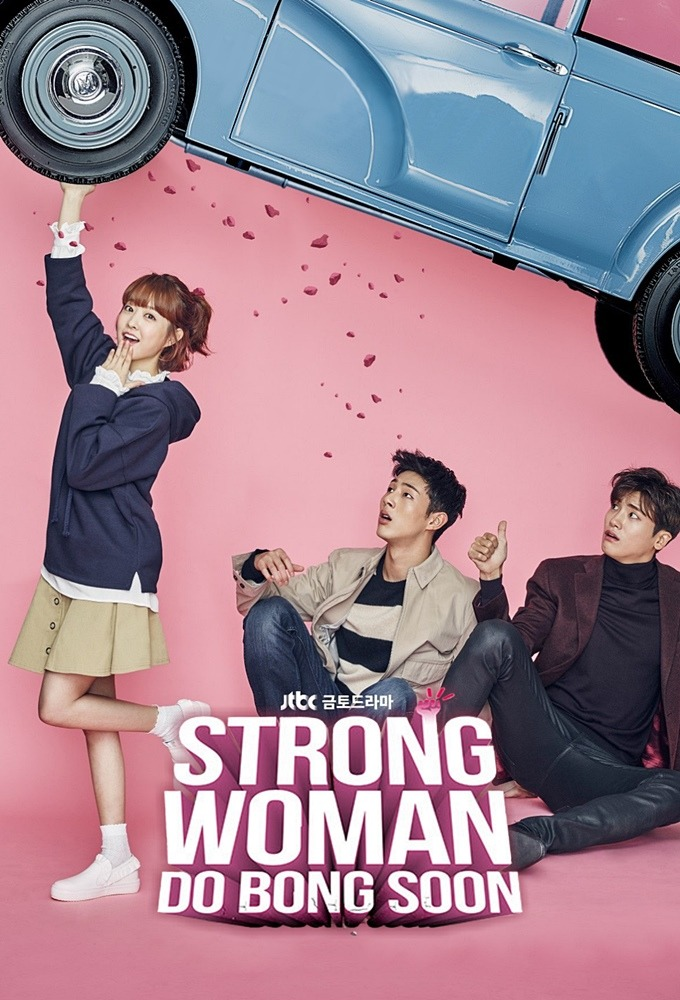

Strong Woman Do Bong Soon
Other name: 힘쎈여자 도봉순 Himsseonyeoja Dobongsun Powerful Woman Do Bong Soon Strong Girl Do Bong Soon Strong Girl Bong Soon A Strong Woman Do Bong Soon
Description:
Do Bong Soon is a petite, unemployed woman who is honest and kind. She appears little and sweet on the outside, but she is in fact very, very strong. In her family, for generations the women have been gifted Herculean strength to use for the greater good. If abused, however, their power will be taken away. Whilst standing up for herself after gang members bully her, she finds herself approached by Ahn Min Hyuk, the handsome and somewhat childish CEO of Ainsoft, a gaming company. Ahn Min Hyuk, who holds a great distrust towards the police, witnessed the whole exchange of Bong Soon's superhuman strength, and now wants to employ her as a bodyguard after being threatened by an unknown enemy. Min Hyuk falls in love with super-strong Bong Soon at first sight, but there's a catch. Bong Soon has eyes for someone else; police officer and childhood friend, In Guk Doo, whom she has known since high school. When chaos ensues after a series of kidnappings in Do Bong Soon's hometown of Dobong-dong, Dobong-gu, Bong Soon must decide whether to use her strength and stand up to evil, or play it safe and keep her powers hidden from the world. Combined with the love triangle she faces between In Guk Doo and Ahn Min Hyuk, as well as having to keep Min Hyuk safe, Bong Soon's life is thrown into turmoil. Can she use her strength for the greater good, or will it prove in the end to be too much?
Country: Korean
Status: Completed
Released: 2017
Genre: Comedy; Fantasy; Investigation; Romance; Supernatural;
epsiode:16